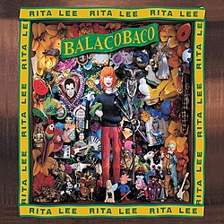
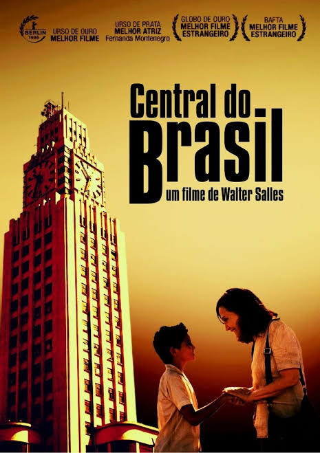
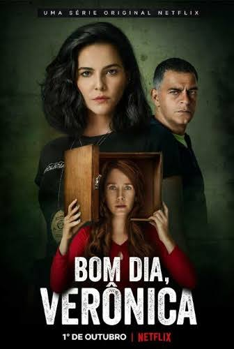

Melhores mpbs
Por: Maria Clara
Todos os dias escutamos musica, mas ja se perguntou quantas musicas Brasileiras consume? acredito que muitas pessoas prefere valorizar mais a cultura de fora, por isso, vim mostrar algumas das melhores musicas Brasileiras. Alguns cantores e músicas: Rita lee (Ovelha negra, Doce vampiro, Erva venenosa) Tom jobim (Pelas luz dos olhos teus, Águas de março, Garota de ipanema) Djavan (Oceano, Se…, Eu te devoro) Tim Maia (Gostava tanto de você, Eu amo você, Azul da cor do mar) Chico Buarque (O caderno (melhor versão porém é de Tom Jobim), João e Maria). Vou postar mais um post continuando, mas por hoje é só isso. .

Filmes Brasileiros ou participações
Por: Maria Clara
O Brasil tem muitos filmes e atores bons, pode ser que não concordem muito comigo, mas o Brasil tem um grande força na área cinematográfica. Admiro muito, pois, muitos filmes retratam coisas que podem acontecer cotidianamente, o que trazem sobre a realidade que muita das vezes fechamos os olhos, ajuda a nos lembrar de onde vivemos. Mas tem alguns filmes que são apenas ficção, mesmo assim entendemos um poco da "mensagem" por trás. recomendações: Central do Brasil Parada 174 Carandiru Estômago (1 e 2) A última casa Tropa de elite (1 e 2) Cidade De Deus Que horas ela volta? Acredito que se assistirem gostaram muito, tem muitas séries maravilhosas também, mas outro dia trago algumas, é isso, até logo.

Séries e Novelas Brasileiras merecem mais reconhecimento?
Por: Maria Clara
Durante a minha infância assisti muitas novelas com a minha vó, adorava chegar da escola e ta começando a novela das 18. por isso trouxe algumas pra recomendar e trazer um pouquinho de nostalgia. Ao longo do tempo fui vendo algumaas séries também, mas o que reina são as novelas. Novelas e séries: Avenida Brasil (2012) Malhação (especificamente Viva a diferença) Amor de mãe (2019) A dona do pedaço (2019) ---------//-------------- Bom dia, Verônica (2020) Verdades Secretas (2015) Senna (2024) Irmandade (2019) Vejam com carinho, porém, vejam a classificação indicativa, é isso por hoje, ate logo.
Músicas brasileiras merecem mais reconhecimento?
Bom já falei sobre músicas brasileiras aqui, mas acho que deveriamos falar mais, ouvir mais, reconhecer mais, nosso cultura, cantores, etc., por isso vim trazer mais Músicas, porém que marcaram adolescentes entr 2016 á 2018. Algumas das melhores músicas: Deixe me ir(1kilo,Baviera, Knust, Pablo Martins) Vem cá (Altamira, Pelé MilFlows) Perdição (L7NNON) Desculpa Doutor (San Joe, Freitera) Vagalumes (POLLO, Ivo Mozart) O Vagabundo e a Dama (Oriente) Vê Se Não Demora (ResenhaDaBlakk) Rainha Da Pista (ConeCrewDiretoria) Calma Na Alma (ConeCrewDiretoria) Por enquanto só isso mas por mim eu colocava mais, até logooo!!